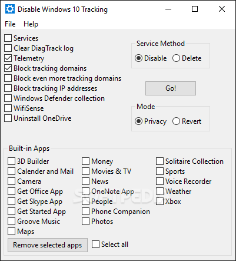

DisableWinTracking - небольшая программка с открытым исходным кодом для отключения некоторых
шпионских модулей в Windows 10. Защитит вашу конфиденциальность и частную жизнь путем
отключения функций, направленных на отслеживание пользовательской активности.

Особенности DisableWinTracking:
- Возможность удаления некоторых типов модулей, предназначенных для передачи данных в
Microsoft.
- Блокировка телеметрии.
- Отключение шпионских модулей. Предлагает восемь вариантов отключения отслеживаний.
- Чистит файл журнала DiagTrack
- Поддержка 32- и 64-битных систем.
- Вносит правки в HOSTS файл, для того чтобы блокировать все попытки ОС отправлять данные.
Операционные системы:
- Microsoft Windows 10 / 8 / 7 / Vista / XP
(32- и 64-разрядные)